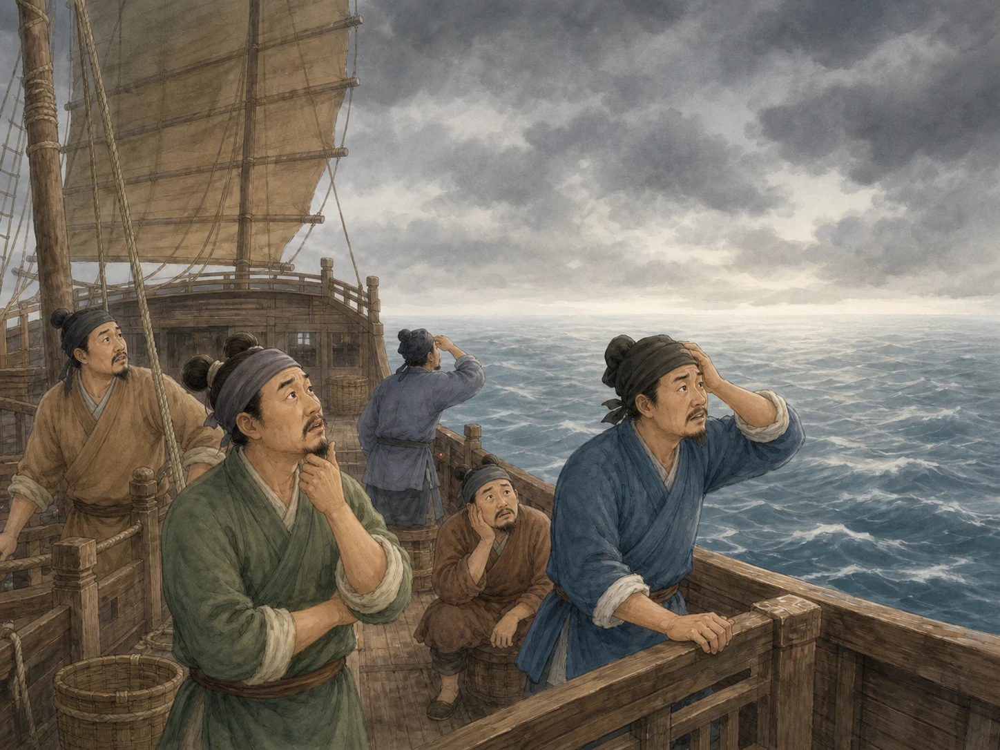
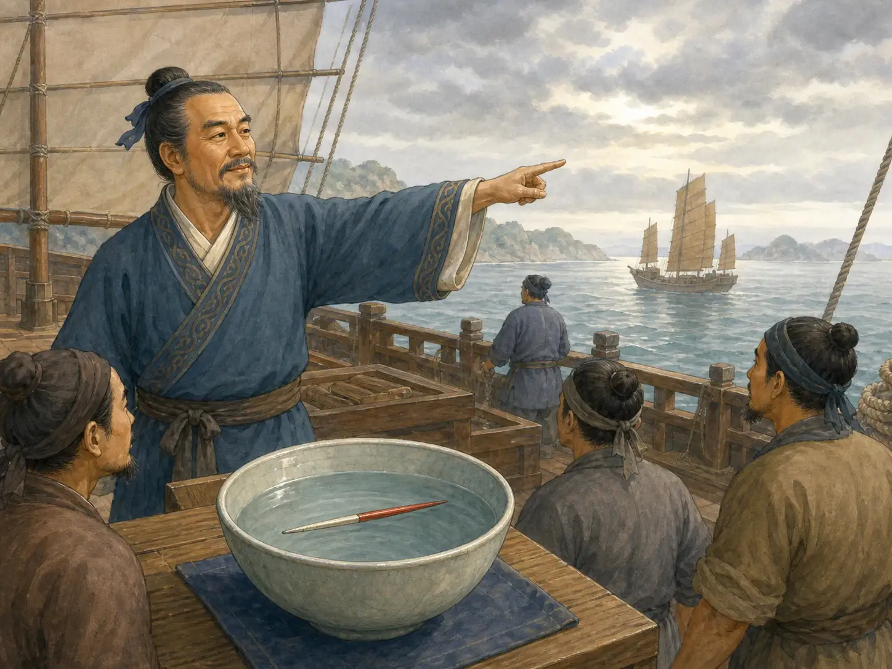

指南针为什么总朝着同一个方向？
Why Does a Compass Needle Keep Pointing the Same Way?
Page 1

When clouds hide the sun and stars, sailors at sea can struggle to tell which direction they are traveling.
很久以前，对海上的船员来说，天空也是“地图”的一部分。白天可以看太阳，晚上可以看星星。可是，如果乌云把太阳和星星全都遮住了呢？
大约九百年前，一本中国古书记下了当时船员辨认方向的方法：晚上看星星，白天看太阳，遇到阴暗的天气，就看指南针。太阳会躲起来，星星也会消失，可那根小小的针还能告诉他们方向。可是，一根针为什么会自己转呢？
For sailors, the sky was once part of the map. On a clear day, the sun helped them judge direction. At night, they could watch the stars. But what happened when clouds covered everything?
A Chinese book written about nine hundred years ago describes exactly that problem. It says that sailors watched the stars at night and the sun during the day, but when the sky was dark and cloudy, they looked at a compass. The sun could disappear. The stars could disappear. The needle still gave them a direction. But why should a little piece of metal know which way to turn?
Page 2
一根针和一块奇怪的石头
A Needle and a Strange Stone
比这稍早一些，一位叫Shěn Kuò · 北宋学者，《梦溪笔谈》的作者。的中国学者记下过一种很有意思的方法。人们用磁石去磨钢针的针尖，再让这根针可以自由转动。
沈括试过好几种办法。针可以浮在水面上，也可以放在碗边，还可以用一根非常细的丝线悬起来。他觉得悬起来最好，因为针可以安安静静地转动。过一会儿，它就会停在南北方向上。
沈括还注意到一个很小的细节：针并不是正正好好指向南方，而是会稍微偏一点。他看出了这个奇怪的现象，只是当时还不知道其中的原因。今天，我们知道了。
A few decades earlier, a Chinese scholar named Shěn Kuò · 沈括 · A Northern Song scholar and the author of the Dream Pool Essays. had written about a curious experiment. People rubbed the tip of a steel needle against a lodestone, a naturally magnetic rock. Then they let the needle move freely.
Shen Kuo described several ways to do this. The needle could float on water, balance on the edge of a bowl, or hang from a very fine silk thread. He thought the silk thread worked best. In a still room, the hanging needle would slowly turn until it settled in a north-south direction.
That was strange enough, but Shen Kuo noticed something even more interesting. The needle did not point exactly south. It leaned slightly to one side. He could see what the needle was doing, even though he could not explain why. Today, we can.
Page 3
地球周围看不见的力量
The Invisible Pull Around Earth

A magnetic needle floating on water can turn freely and settle along a north-south line.
钢针经过磁化以后，就变成了一个小小的磁体。只要让它自由转动，它就会受到地球磁场的影响。
地球周围有一个我们看不见的磁场。指南针里的小磁针会慢慢转动，最后大致停在南北方向上。所以，无论你怎样转动指南针，只要等一会儿，磁针又会转回熟悉的方向。
这也解释了沈括看到的那个小小偏差。磁针指的方向和地图上的正南、正北并不总是完全重合，而且在不同的地方，偏差也不一样。中国古人常把它叫作“指南针”，注意的是指向南方的一端。今天的指南针通常让我们看指北的一端。其实还是同一根针：一头朝着南北线的一边，另一头自然朝着相反的方向。
When a steel needle is magnetized, it becomes a tiny magnet with two ends. If it is free to turn, it responds to Earth’s magnetic field.
We cannot see that field, but it surrounds the planet. A compass needle turns until it lines up roughly north and south with the magnetic field around it. That is why you can turn a compass around, wait a moment, and watch the needle swing back toward the same direction.
It is also why Shen Kuo was right to notice that his needle did not point exactly south. Magnetic north and the north shown on a map are not exactly the same thing, and the difference changes depending on where you are. In old China, people often talked about the south-pointing needle. Today, we usually pay attention to the end that points north. The needle itself has not changed. One end points one way along the north-south line, and the other points the opposite way.
Page 4
从一根针到航海工具
From a Needle to a Navigator’s Tool
指南针并不会告诉船员港口在哪里，也不会知道水下有没有暗礁。船员还是要认识海路，会看太阳、星星、岛屿和海岸，也要记住风向和水流。
指南针做的是另一件事：当别的线索看不见时，它还能给出一个方向。这一点在海上特别有用。走在陆地上，还可以沿着道路、河流或者山走；船驶到远海以后，四周可能只有一片水。如果天空又被云遮住，平时用来认路的东西就更少了。
到了十二世纪初，中国的古书已经清楚记下船员用指南针在阴暗天气里辨认方向。后来，指南针越来越成为航海的重要工具，船员还会把罗盘方向和航海手册放在一起使用，寻找一座又一座港口。
A compass did not tell a sailor where the nearest harbor was. It did not know where rocks were hiding under the water, and it could not choose the best route. Sailors still needed to know the sea. They watched coastlines, islands, the sun, and the stars. They remembered routes and learned how winds and currents behaved.
The compass gave them something different: a direction they could check even when other clues disappeared. That became especially valuable at sea. On land, a traveler might follow a road, a river, or a mountain. Far from shore, there might be nothing around a ship except water. If clouds hid the sky as well, even familiar clues could vanish.
By the early twelfth century, Chinese writers were clearly recording sailors using the magnetic compass in just this way. In later centuries, compasses became a regular part of Chinese navigation, and sailors combined compass directions with written sailing guides to travel between ports.
Page 5
当天空变成灰色
When the Sky Goes Gray
想象一艘船已经驶离海岸。白天，船员一直在看太阳辨认方向，可厚厚的云慢慢盖住了天空。到了晚上，连星星也看不见了。
这时候，他们并不需要指南针把整条路都告诉他们。那根针只要做好一件小小的事情就够了：告诉他们，哪个方向是哪边。磁针轻轻转动，摇晃一会儿，又慢慢停下来。对一艘看不见海岸、也看不见星星的船来说，这根小小的针已经非常有用了。
Imagine a ship far from shore. During the day, the crew has been watching the sun. Then thick clouds roll across the sky. By night, there are no stars to see either.
The sailors do not need the needle to tell them their whole journey. They need it to do one small job reliably: show them which direction is which. The needle turns, wobbles for a moment, and settles again. For something so small, that was an extraordinary power to carry aboard a ship.